顺序表中第一个元素的存储地址是100，每个元素的长度为2，则第5个元素的地址是（ ）。
A．110 B．108 C．100 D．120
设有一个 10 阶的对称矩阵 A，采用压缩存储方式，以行序为主存储， a11 为第一元素， 其存储地址为 1，每个元素占一个地址空间，则 a85的地址为（ ）。
A. 13
B. 33
C. 18
D. 40
在一个长度为n的顺序表中，在第i个元素（1≤i≤n+1）之前插入一个新元素时须向后移动（ ）个元素。
A．n-i B．n-i+1 C．n-i-1 D．I
A）节省存储空间 B）插入与删除运算效率高
C）便于查找 D）排序时减少元素的比较次数
线性表L=（a1，a2,...,an）,下列说法正确的是：
A.每个元素都有一个直接前驱和一个直接后继
B.线性表中至少有一个元素
C.除第一个和最后一个元素外，其余每个元素都有一个且仅有一个直接前驱和直接后继
D.表中诸元素的排列必须是由小到大或由大到小
线性表的顺序存储结构是一种（ ）的存储结构。
A.随机存取
B.顺序存取
C.索引存取
D.HASH存取
线性表L=(a1，a2,……an)，下列说法正确的是（ ）。
A．每个元素都有一个直接前驱和一个直接后继
B．线性表中至少有一个元素
C．表中诸元素的排列必须是由小到大或由大到小
D．除第一个和最后一个元素外，其余每个元素都有一个且仅有一个直接前驱和直接后继。
一个向量第一个元素的存储地址是100，每个元素的长度为2，则第5个元素的地址是：
A.110
B.108
C.110
D.120
顺序存储结构只能用于存储线性结构。
该程序是动态创建的顺序表。完成删除元素的函数（DeleteList），该删除函数删除该顺序表的第k个（k介于1~N）元素。若k值不合法显示删除不合法。
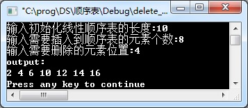
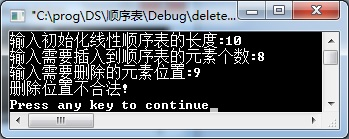
已有顺序表s、t，将顺序表s在顺序表t中出现的最后1个数据值及位置下标返回输出。
图中第1行的5，第4行的5，第2行，第5行是键盘输入。
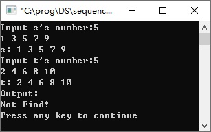
已有顺序表s、t，将顺序表s在顺序表t中未出现的第1个数据值及位置下标返回输出。
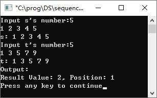
该程序是一个动态分配内存的线性顺序表。请补充完整构造该顺序表的函数（InitList）。
该程序功能：初始化线性顺序表，在顺序表中插入元素。
完成该程序的插入元素操作。
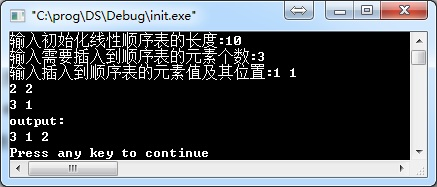
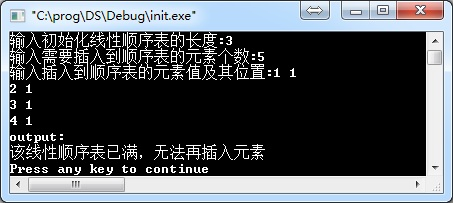
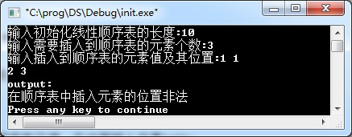
已有顺序表la，将la中是k倍数的元素全部删除。
图中第1行的10，第4行的3，第2行是键盘输入。
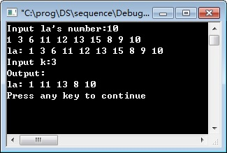
该程序为动态分配内存的顺序表。完成函数FindList查找第k个位置的元素（k介于1~N）。
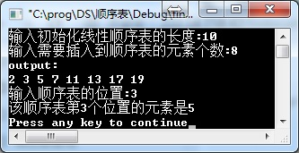
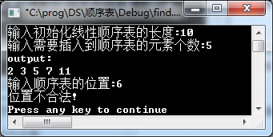
将两个存放一元多项的顺序表one、two求和，存放在three顺序表。
图中第1行的3，第4行的3，第2行，第5行是键盘输入。
注：创建一元多项顺序表输入格式：系数 指数 系数 指数 系数 指数……，要求指数是升序。
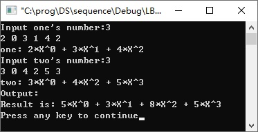
将两个存放一元多项的顺序表one、two求积，存放在three顺序表。
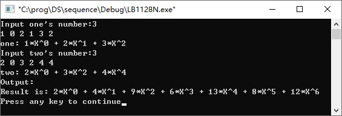
已有顺序表s、t，将顺序表s在顺序表t中未出现的元素个数返回输出。
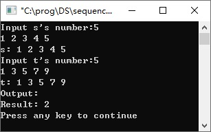
该程序是动态分配空间的线性顺序表。完成删除值为value的函数（DeleteList）。
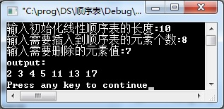
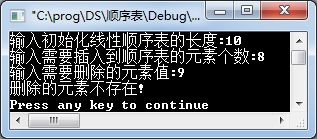
该程序是一个动态分配内存构造的线性顺序表。请补充完整该顺序表的结构声明以及相关类型声明。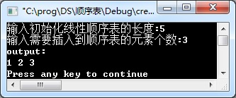
已有顺序表s、t，将顺序表s在顺序表t中出现的元素个数返回输出。
已有顺序表s、t，将顺序表s在顺序表t中出现的第1个数据值及位置下标返回输出。
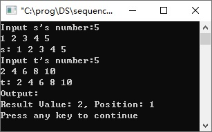
已有顺序表la、lb，将lb中再现的元素从la中全部删除。
图中第1行的8，第4行的3，第2行，第5行是键盘输入。
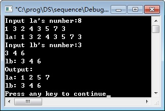
已有顺序表s、t，将顺序表s在顺序表t中未出现的最后1个数据值及位置下标返回输出。
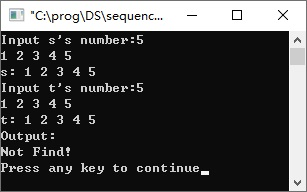
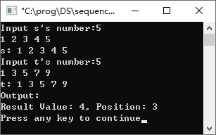
该程序为动态分配内存的顺序表。完成函数FindList查找值为value的元素位置。
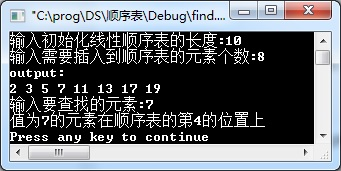
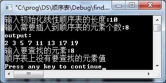
已有顺序表L1和空表L2，将顺序表L1中的奇数元素删除，并且存储在顺序表L2中。
图中第1行的5，第2行是键盘输入。
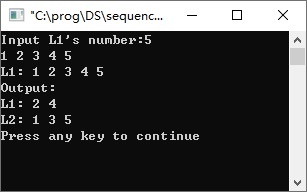